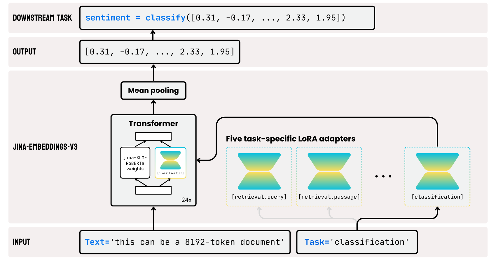

Jina Embeddings v3：多语言句向量与任务 LoRA¶
在多语言长上下文骨干上分别训练任务 LoRA，并以 MRL 同时优化多种输出维数，兼顾检索、匹配、分类与聚类。
摘要¶
单一向量空间未必能同时适配非对称检索、STS、分类和聚类，而自然语言指令又引入提示选择。Jina embeddings v3 改造 XLM-RoBERTa 的位置编码与注意力，在多语 MLM 和大规模文本对训练后冻结骨干，为不同任务训练小型 LoRA；再结合 MRL 与失败驱动合成数据改善使用弹性和检索边界。
论文报告英语 MTEB 平均 65.52、多语汇总 64.44，并在 LongEmbed 上优于所测基线。结论是约 572M 参数获得较好的多任务折中，并非每个数据集均领先。低资源语言、实体歧义和任务适配器选择仍影响质量。
引言¶
「通用嵌入」并不通用¶
同一向量空间要同时服务：非对称检索、STS、聚类、分类。E5 系用 query: / passage: 前缀缓解不对称；Instructor 系用自然语言指令。痛点：
- 指令难写、难复现，「prompt vibe」不稳定；
- 单一底座难在所有任务上同时最优；
- 7B LLM 嵌入涨分有限（论文称相对本模型 EN 仅约 +1%）但部署成本差一个数量级。
设计选择¶
- Task LoRA：冻结骨干，按任务加载低秩适配器（rank 4）；
- 合成数据修补检索四类系统失败；
- 集成 MRL、instruction 思想、长上下文（RoPE）——但主路径是 adapter 而非纯指令。
相关工作¶
通用句向量¶
预训练 MLM 的目标与句级余弦比较不同，Sentence-BERT 及后续多阶段对比训练将其适配到检索、分类和相似度。ALiBi／RoPE 扩展输入长度，MRL 则训练可截断输出。
多语言模型¶
XLM-R、multilingual-E5、BGE-M3 与 mGTE 提供多语编码路线；LLM 也能作为更大骨干或合成数据教师。本文选择较紧凑的 encoder-only 骨干。
任务专用表示¶
E5 的 query/passage 前缀、INSTRUCTOR 的任务指令将任务条件放入输入。本文进一步将任务差异放入小型 LoRA 参数，用户选择任务标识即可切换表示。
模型架构¶

骨干改造¶
初始化 XLM-RoBERTa 权重，再改：
| 组件 | 改动 |
|---|---|
| 位置 | 绝对位置 → RoPE |
| 注意力 | FlashAttention 2 |
| 池化 | Mean |
| 任务 | Attention 内 embedding / 线性层挂 LoRA（rank 4） |
| Tokenizer | 保留原 XLM-R 词表 |
试过 BGE-M3 式「延长位置表」：长文任务差，作者归因于 短文为主训练 + mean pooling（对比 BGE 的 multi-CLS）。
Rotary base：训练用 \(10^4\)，推理提到 \(2\times10^4\)，长文更好且短文不掉——与「增大 base 利于长文」（Xiong et al.；Zhang et al. mGTE）同族技巧。
Task LoRA 接口¶
每个输入带 task id（整数），动态选择 adapter：
| Adapter | 用途 |
|---|---|
retrieval.query |
非对称检索的 query |
retrieval.passage |
非对称检索的 passage |
text-matching |
STS、对称检索（如重复检测） |
classification |
下游分类器用的特征 |
separation |
聚类、重排 |
LoRA：对权重 \(W\) 学习 \(\Delta W=BA\)（低秩），推理 \(W'=W+BA\)。五套 adapter 总开销 <3% 参数，可并存于内存。
评测约定（论文 §5.2）：分类 / pair-cls → classification；STS + ArguAna / CQADupstack / Quora → text-matching；其余检索 → retrieval；聚类 / rerank → separation。
模型规格为 24 层、250K 词表、1024 维输出；骨干 559M 参数，含任务适配器约 572M，输入上限 8192 token。不同任务以同一骨干、不同 LoRA 生成各自表示。
训练方法¶
预训练¶
- 数据：CulturaX，89 语，英文约 20%；单语 batch，batch 间轮换语言；
- Whole-word masking；不训 LoRA / 池化；
- 先 100k steps @512，再 60k steps 长序列（附录：8192、更小 batch）；
- 尽管位置编码从绝对改为 RoPE，从 XLM-R 初始化仍比随机快收敛；
- 长文能力一度落后 v2，加长长文 MLM 后 NarrativeQA 等回升。
附录超参（摘要）：短文 8 卡、bs \(128\times8\)、lr \(10^{-4}\)；长文 bs \(8\times8\)、lr \(5\times10^{-5}\)。
嵌入任务微调¶
Mean pooling 后，双向 InfoNCE（论文 Eq.1–2）：
其中 \(B=((p_1,q_1),\ldots,(p_k,q_k))\)，\(B^{\dagger}\) 为对调。数据：>10 亿 对，>300 子数据集；每 batch 只来自一个子集。额外过滤：若短文本中 ≥80% 词（且至少 4 词）是长文本子串则丢弃——降低纯字面重叠捷径。同样 先短后长（短：192 seq、大 batch；长：1024、较小 batch）。\(\tau\)：短 0.05 / 长 0.02。
任务适配器训练¶
骨干冻结；各任务独立数据与损失。
Classification → \(\mathcal{L}_{\mathrm{triplet}}\)¶
借鉴 Gecko，为每个样本选取同类别 \((q,p)\) 与 7 个异类负例；每 batch 来自同一个分类数据集。扩展 InfoNCE（Eq.3）：
\(r=(q,p,n_1,\ldots,n_m)\)。假负问题：其它 tuple 的同类文本可能进分母。对策（Gecko）：给每个 tuple 的文本 追加 tuple 专属 ID，让模型优先学「tuple 内分离」。
Text Matching → CoSENT¶
适用于 STS 与对称检索。以下按标准 CoSENT 形式展开，优化人工相似度的相对顺序。原文式（4）有排版歧义，具体实现以该标准形式为准：
\(\zeta\) 为标注相似度。数据：STS12、SICK 等；机器翻译扩语种（WMT19、MADLAD-3B）；并混 NLI。每 step 抽 一个 数据集，套对应损失。
Asymmetric Retrieval → 双 Adapter + \(\mathcal{L}_{\mathrm{triplet}}\)¶
Query / passage 两套 LoRA 联合训练（消融显示双 adapter 优于单 adapter）。难负例：MS MARCO、NQ；无标注负例则用 BGE-large / BM25 挖掘。损失同 Eq.3。
检索失败分析与合成修补¶
相对 v2 同族数据，归纳四类失败：
| ID | 失败模式 |
|---|---|
| F1 | 句法相似误导：字面重叠压过真正相关 |
| F2 | 命名实体误读：专名部分匹配 / 多义词 |
| F3 | 极性问句：yes/no 问题取到「话题相关但不回答」 |
| F4 | 偏好低质文档：短、重复、信息贫乏但含 query 词 |
F1–F3：提示词生成 query + 优选回答 + 7 个建模该失败的负例。 F4：OpenAssistant oasst1/2 偏好分；最高质答案为正，质量低 ≥0.3 为负，不足则随机补。
Separation → CoSENT 变体¶
聚类 / rerank：batch 内 \((x,l)\)，同标签配对后套 \(\mathcal{L}_{\mathrm{co}}\)（Eq.5）：
该类数据少，混入 Stage II 配对数据与对应损失，按 text-matching 同款「每 step 单数据集」调度。
评测¶
Jina-XLM-RoBERTa 骨干¶
先对三个多语骨干做相同的短配对训练：1,000 步、约 200 万对，不使用任务适配器。原文表 3 中，Jina-XLM-R 的英语子集平均为 76.05，XLM-R 为 73.38、mBERT 为 69.18；多语／跨语子集分别为 67.12、66.62、62.38。继续预训练总体有益，但个别任务仍略低于原 XLM-R。
MTEB¶
原文表 4 的英语对照如下。分类、成对分类使用 classification，STS 和三个对称检索集使用 text-matching，其余检索使用 query/passage 两侧适配器，聚类与重排使用 separation。
| 模型 | 平均 | 分类 | 聚类 | 成对分类 | 重排 | 检索 | STS | 摘要 |
|---|---|---|---|---|---|---|---|---|
| Jina v2-base-en | 60.38 | 73.45 | 41.73 | 85.38 | 56.98 | 47.87 | 80.70 | 31.60 |
| Jina v3 | 65.52 | 82.58 | 45.27 | 84.01 | 58.13 | 53.87 | 85.80 | 29.71 |
| multilingual-e5-large-instruct | 64.41 | 77.56 | 47.10 | 86.19 | 58.58 | 52.47 | 84.78 | 30.39 |
| Cohere multilingual v3 | 64.01 | 76.01 | 46.60 | 86.15 | 57.86 | 53.84 | 83.15 | 30.99 |
Jina v3 的平均、分类、STS 较强，聚类与重排仍有更高分对照。多语加权平均为 64.44，mE5-large 为 59.58、mE5-large-instruct 为 64.25；多语各任务并未全部优于 instruct。v2 双语系列仅覆盖中／西／德语的部分任务，不能把其汇总当作同范围多语模型成绩。
与 E5-Mistral 的约 66.63 相比，v3 低约 1.11 个分数点，同时参数与向量维数更小。这里比较的是报告时点的模型与任务集合。
LongEmbed 长文本检索¶
| 模型 | 平均 | NarrativeQA | Needle | Passkey | QMSum | SummScreen | WikiQA |
|---|---|---|---|---|---|---|---|
| Jina v3，text-matching | 70.39 | 33.32 | 84.00 | 100.00 | 39.75 | 92.78 | 72.46 |
| Jina v2-base-en | 58.12 | 37.89 | 54.25 | 50.25 | 38.87 | 93.48 | 73.99 |
| OpenAI text-embedding-3-large | 51.30 | 44.09 | 29.25 | 63.00 | 32.49 | 84.80 | 54.16 |
| BGE-M3 | 56.56 | 45.76 | 40.25 | 46.00 | 35.54 | 94.09 | 77.73 |
原文表 5，nDCG@10 百分数。 v3 的均分优势主要来自 Needle 与 Passkey；NarrativeQA 等任务仍落后于部分对照。这个结果同时包含位置编码、长文训练和模型配置变化。
检索失败¶
论文分别使用少量手选错误和更大的合成错误集检查 F1–F4。手选集中的阶段对照为：
| 模型阶段 | F1 句法误导 | F2 实体 | F3 极性问句 | F4 低质量文档 |
|---|---|---|---|---|
| v3 配对训练后 | 46.97 | 45.45 | 27.27 | 9.09 |
| v3 检索适配器后 | 62.12 | 45.45 | 45.45 | 81.82 |
原文表 6 上半部，mAP（%）。 F1、F3、F4 改善，实体问题没有改善。手选集多数类型不足十个例子，所以作者又做合成评测：F1/F2/F3 的 nDCG@10 从 37.63/93.04/45.91 提到 45.78/98.78/47.62。合成集与训练生成方式接近，是论文承认的一项限制。
消融：MRL 与检索不对称性¶
MRL 在训练中同时约束多个向量前缀，使部署可以选择维数。原文表 7 显示这种压缩具有任务差异：
| 维数 | 检索 nDCG@10 | STS Spearman |
|---|---|---|
| 32 | 52.54 | 76.35 |
| 64 | 58.54 | 77.03 |
| 128 | 61.64 | 77.43 |
| 256 | 62.72 | 77.56 |
| 512 | 63.16 | 77.59 |
| 768 | 63.30 | 77.59 |
| 1024 | 63.35 | 77.58 |
STS 在 128 维后变化很小，检索更依赖维数；32 维虽然可用，仍有明显质量代价。
原文表 8 对照单／双检索适配器和有／无指令，九项任务平均为：
| 配置 | 一个适配器 | query/passage 两个适配器 |
|---|---|---|
| 有指令 | 45.20 | 45.98 |
| 无指令 | 43.92 | 45.62 |
两侧分别适配在两种条件下都提高平均结果；指令的额外收益在双适配器条件下较小。个别任务如 NarrativeQA 并不符合平均趋势，因此论文保留任务级结果。
结论¶
Jina v3 以多语长文本骨干、任务 LoRA、失败驱动数据与 MRL，提供一个参数规模较紧凑的多任务句向量模型。论文同时展示了任务适配、可截断维数和长文训练的具体收益。低资源语言和系统性检索失败仍是作者计划继续研究的方向。